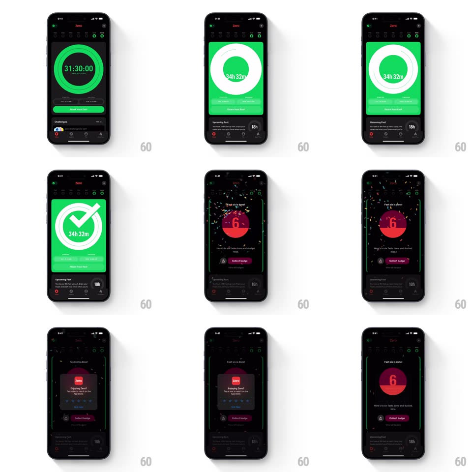

Media
Frame-by-frame

Rebuild this interaction 1:1: Zero's fast-completion sequence - tap "Break Your Fast" and the timer ring flips into a bright green celebration with a drawn check, then confetti falls as your streak badge is awarded.

Rebuild this interaction 1:1: Zero's fast-completion sequence - tap "Break Your Fast" and the timer ring flips into a bright green celebration with a drawn check, then confetti falls as your streak badge is awarded.
## Integration
Integration: stack-agnostic spec - springs given as stiffness/damping, timed motions as duration + curve; map every value to your framework and animation library of choice.
## Scene
A dark timer screen: green progress ring around "31:30:00", week dots up top, a green "Break Your Fast" pill. Celebration: the ring area floods bright green with a huge white circle and check over "34h 32m". Award: a dark confetti screen ("Fast 6x is done!") with a glowing red-orange flame badge ("6"), "Collect badge" magenta pill. A rating modal ("Enjoying Zero?") slides over at the end.
## Motion spec
Pattern: ring-flip celebration into confetti badge award.
- Tap Break Your Fast: the pill presses (scale 0.95, 100ms); the ring completes its stroke to 100% (300ms), then the whole card flips to its bright-green face (rotateY 180deg spring ~320/18) as the white circle scales in (spring ~380/20).
- The check draws itself (stroke reveal, 350ms, ease-out) with a success haptic; the final time fades in beneath.
- Transition to the award screen: the green card slides up and away (300ms) revealing the dark confetti scene - confetti (green, white, magenta pieces) falls from the top in a continuous gentle rain (3-5s, sway + rotation per piece).
- The badge drops in from above (translateY -200px, spring ~300/16, landing bounce) with a radial glow pulsing behind it (opacity 0.4-0.8, 2s); "Collect badge" pill slides up (spring ~360/26).
- Collect: the badge flies toward the top bar (bounds flight, spring ~340/20) and a toast confirms; the rating modal then slides up (spring ~360/28) with stars that fill left-to-right on tap-drag.
## Calibration
- The green celebration face is the app's exact bright green - a full-bleed inversion of the dark theme.
- Confetti keeps falling behind the badge until collection; density is moderate (no whiteout).
## Reduced motion
Ring fills without flip; confetti static; badge fades in.
## Don't miss
- The check is a drawn stroke, not an icon pop - the draw timing IS the celebration beat.
- The badge number ("6") is a streak count inside a flame/shield shape with a warm gradient.